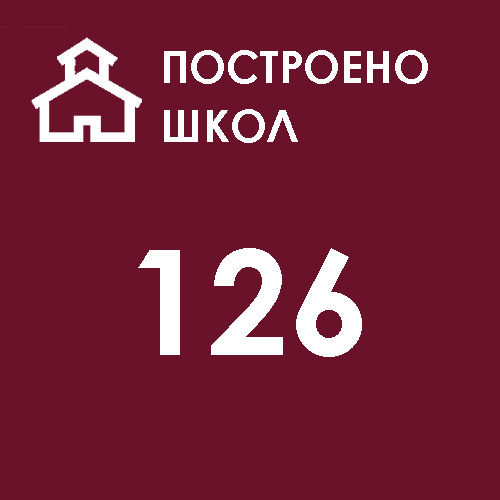

О нас
История статистики
Постановлением Кара-Киргизского облревкома от 29 апреля 1926 года был образован комитет по статистике, на который были возложены задачи по всесторонней разработке статистических данных, а также координации деятельности статистических органов, находящихся в то время в составе различных ведомств и учреждений.
В октябре 1927 года ВЦИК и СНК РСФСР было утверждено типовое Положение о местных органах государственной статистики, в соответствии с которым при Совете народных комиссаров Киргизской АССР было создано центральное статистическое управление (ЦСУ)
В 1930 году в соответствии с постановлением ЦИК и СНК СССР органы ЦСУ были упразднены как самостоятельные ведомства, а функции ЦСУ были переданы Госплану.
При Госплане Киргизской ССР в 1936г. образовано Управление народнохозяйственного учета (УНХУ) - главный статистический орган республики.
С 7 апреля 1941 года УНХУ Госплана было переименовано в ЦСУ Киргизской ССР. Областные УНХУ были преобразованы в областные статистические управления. На местах при райисполкомах и горсоветах созданы районные (городские) статистические инспектуры.
В соответствии с постановлением Совета Министров СССР от 10 августа1948 года, ЦСУ был выделен из системы Госплана в самостоятельное ведомство. ЦСУ Госплана Киргизской ССР было преобразовано в ЦСУ при СоветеМинистров Киргизской ССР с подчинением также ЦСУ СССР.
В 1987 году ЦСУ Киргизской ССР преобразуется в Государственный комитет по статистике (Госкомстат Киргизской ССР),
Важной вехой в истории государственной статистики стал 1994 год.
Госстатагентство было преобразовано в Государственный комитет Кыргызской Республики по статистике и вышло из состава Правительства республики, что явилось гарантией независимости государственной статистической системы от влияния политических и государственных структур.
В мае этого же года происходят новые структурные изменения в статистической системе. Президент Кыргызской Республики 30 мая 1994 года подписал Указ «О Национальном статистическом комитете Кыргызской Республики», в соответствии, с которым Государственному комитету Кыргызской Республики по статистике придан статус Национального статистического комитета. В соответствии с новым статусом, Национальный статистический комитет подотчетен только Президенту республики. Статус независимости статистическая служба Кыргызской Республики получила первой среди стран СНГ.
Сегодня Национальный статистический комитет Кыргызской Республикина региональном уровне представляют 7 областных управлений (Баткенское,Джалал-Абадское, Иссык-Кульское, Нарынское, Ошское, Таласское и Чуйское областные управления государственной статистики), Бишкекское и Ошское городское управление государственной статистики.
Совет по статистике О Совете по статистике Кыргызской Республики Национальный статистический комитет Кыргызской Республики сообщает, что Указом Президента Кыргызской Республики от 7 марта 2014 года УП №54 утверждены Положение о Совете по статистике Кыргызской Республики и его состав. Возобновление деятельности Совета по статистике является необходимым условием дальнейшего укрепления и развития национальной статистической системы Кыргызской Республики. Главной задачей Совета по статистике является обеспечение взаимодействия между производителями и пользователями статистических данных для информирования о потребностях пользователей, идеях, рекомендациях и налаживания обратной связи. Совет по статистике предоставляет также и возможность для пользователей непосредственно влиять на стратегическое планирование, мониторинг и содержание статистических данных.
Совет по статистике О Совете по статистике Кыргызской Республики Национальный статистический комитет Кыргызской Республики сообщает, что Указом Президента Кыргызской Республики от 7 марта 2014 года УП №54 утверждены Положение о Совете по статистике Кыргызской Республики и его состав. Возобновление деятельности Совета по статистике является необходимым условием дальнейшего укрепления и развития национальной статистической системы Кыргызской Республики. Главной задачей Совета по статистике является обеспечение взаимодействия между производителями и пользователями статистических данных для информирования о потребностях пользователей, идеях, рекомендациях и налаживания обратной связи. Совет по статистике предоставляет также и возможность для пользователей непосредственно влиять на стратегическое планирование, мониторинг и содержание статистических данных.
Интересная статистика




Акция! 30.05.2020
"Посади своё дерево"